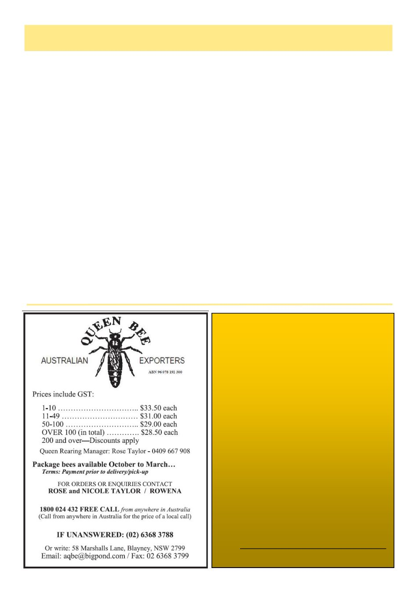

12
Australian Bee Journal
Australian Queen Bee Line
invites expressions of interest for the purchase
of selected commercial extraction equipment
and hives.
Available:
• Cook & Beals 132-Frame Extractor and
Conveyor Unit, with Beequip Deboxer and
Uncapper, plus Cook & Beals Auger and Wax
Reducer
• Kelley 90-Frame Extractor and Conveyor,
with Beequip Uncapper
• 500 ten-frame single hives on pallets
Enquiries and expressions of interest are
welcome for the complete offering
or selected components.
Please Contact:
Charles Casido
Operations Manager
Email: office@australianqueenbeeline.com.au
Phone: 0434 353 301
Beekeeper Smarts
By Simon Chatburn
Above all beekeeper intelligence lives where humili-
ty and curiosity meet.
Henry David Thoreau once lamented how hard it is
for human groups to achieve true collective intelli-
gence: ―The mass never comes up to the standard of its
best member, but on the contrary degrades itself to a
level with the lowest.‖ Likewise, Friedrich Nietzsche
claimed that ―Madness is the exception in individuals
but the rule in groups.‖
Human collectives can indeed make bad decisions,
yet they can also make exceptionally good ones. The
question for us as beekeepers is: under what conditions
can a community of beekeepers act with high intelli-
gence, making wise, timely decisions that genuinely
serve the bees‘ needs?
Honey bee nest‑site selection offers a template. By
translating the swarm‘s decision habits into human
practice, beekeeper groups can become more like a
well‑functioning superorganism and less like the disor-
ganized crowds Thoreau and Nietzsche criticized.
The first relevant factor is how beekeeper commu-
nities are organized with respect to knowledge. In an
―intelligent apiary culture,‖ decisions are not dominated
by one or two charismatic voices, nor by a narrow or-
thodoxy. Instead, information‑gathering and hypothesis
generation are broadly diffused among many beekeep-
ers, each acting as a ―scout‖ in different landscapes,
climates and management styles. Each beekeeper inde-
pendently explores options - treatment protocols, forage
strategies, hive designs, breeding lines, alternative or
low‑chemical approaches - and brings those findings
back to the group. Just as scout bees freely report every
possible nest site via the waggle dance, an intelligent
beekeeper community creates spaces where good, medi-
ocre and even failed experiments can be shared without
ridicule or suppression. The larger and more diverse
this pool of field experience, the more likely it is that
truly excellent, bee‑centric practices will emerge.
A second key feature of ―beekeeper intelligence‖ is
the cultivation of independence of judgment rather than
conformity. In the swarm, a newly recruited scout does
not simply echo the dance she followed; she inspects
the site herself and only dances if her own evaluation
confirms its quality. Beekeeper communities can mir-
ror this by encouraging practitioners to test popular ide-
as in their own apiaries, with careful observation and
records, rather than adopting fads, marketing claims or
―guru‖ prescriptions uncritically. When a respected
beekeeper reports success with a method - say a new
natural varroa strategy, a biocontrol, or a novel cultural
practice - the intelligent response from others is not
blind adoption but thoughtful trial: ―I will try this,
measure its impact on my bees, and then report back
honestly.‖ This independence of opinion prevents error
cascades and ―mass manias‖ over poor interventions
that may harm bees or waste resources.
The third crucial ingredient is how beekeeper com-
(Continued on page 13)